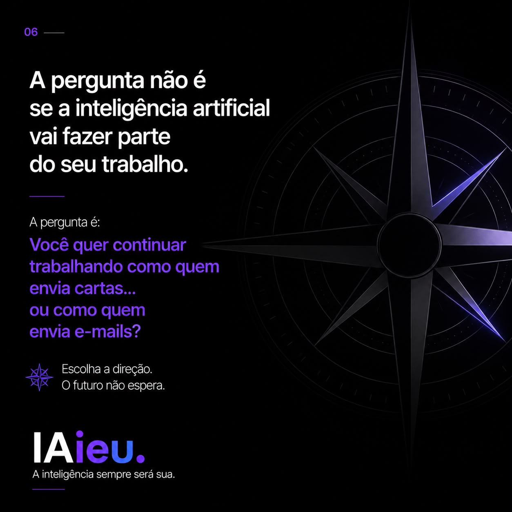
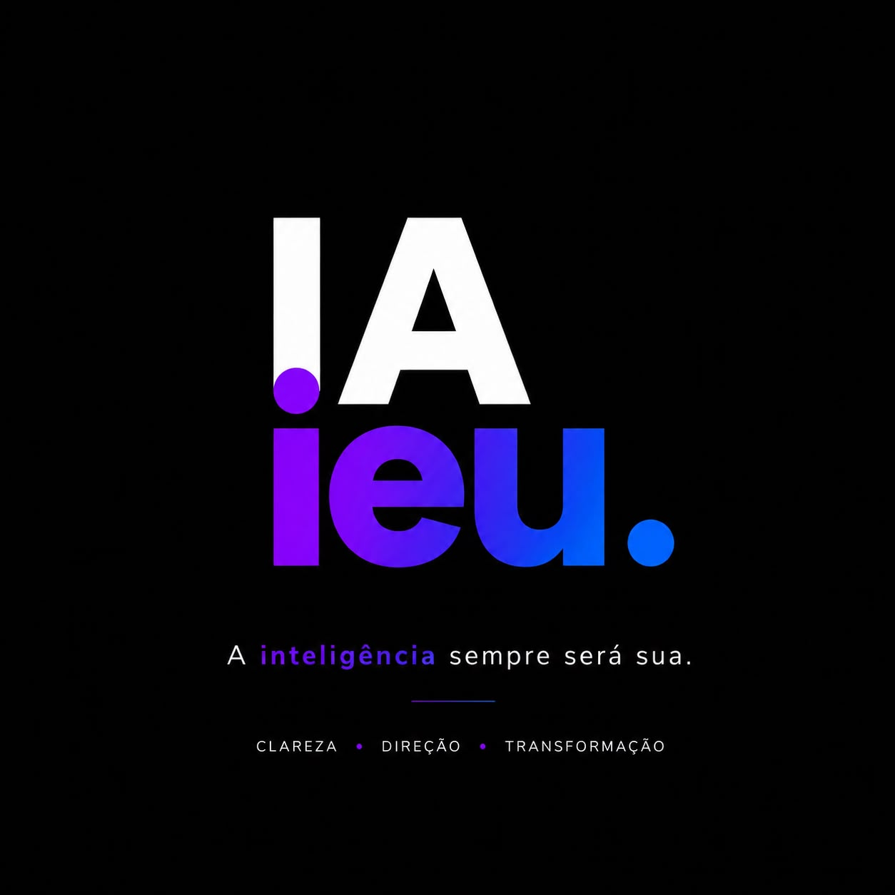

Clareza abre caminhos.
Seu problema não está sem solução. Está sem direção.
Meu trabalho é transformar isso em um caminho claro.
Você não compra inteligência artificial. Compra tempo, tranquilidade e direção. A IA é só a ferramenta que torna isso possível.
O que é o IAieu.
O IAieu transforma um problema confuso em um caminho claro de decisões. Quem conduz é Caetano Zammataro, fundador do IAieu. A inteligência artificial entra como ferramenta de trabalho, nunca como o produto que você compra.
Para quem é: profissionais e empresas que já pesquisaram, estudaram e testaram, e mesmo assim seguem travados na hora de decidir o próximo passo.
O que você recebe: o problema entendido no contexto certo, a causa separada do sintoma e a confusão organizada numa sequência simples de decisões, pronta para executar.
Como falar comigo: a conversa começa pelo WhatsApp, em português. Também dá para escrever para czamma@gmail.com.
Para quem tem informação demais e clareza de menos.
Você já pesquisou, estudou, testou. Não falta informação. Falta clareza para decidir.
- Uma empresa que perdeu o rumo e não sabe o que resolver primeiro.
- Você sabe muito, mas trava na hora de mostrar o seu valor.
- Tem uma ideia na cabeça que não sai do lugar.
- Pesquisou tanto sobre um problema que já não enxerga a saída.
Se você se reconheceu em alguma dessas linhas, a gente precisa conversar.
Quando você compra um curso, paga para aprender a ferramenta. Só que a ferramenta nunca foi o seu problema. O que falta é direção.
Ninguém entra numa padaria para aprender a fazer um bolo. Entra porque quer sair com o bolo pronto.
Com inteligência artificial acontece a mesma coisa. Muita gente compra curso para aprender a usar a ferramenta. Mas, na maioria das vezes, o problema nunca foi a ferramenta. Foi não saber exatamente o que precisava ser feito.
Simples para você. O trabalho pesado é meu.
Você traz o problema
Me conta a situação confusa, por áudio ou numa conversa. Sem formulário. Sem tela em branco.
Eu organizo
Separo o que importa do que é ruído e acho a causa. A inteligência artificial acelera. A direção é minha.
Você sai sabendo o que fazer
Você recebe um caminho claro, pronto para executar. Sem depender de mim a cada passo.
O formato muda conforme o seu problema. O que eu entrego é sempre o mesmo. Clareza.
Do correio ao e-mail. Agora, a IA.
Arraste as artes. É o mesmo carrossel que eu postei lá no @iaieu.evc.




“A inteligência artificial responde perguntas. O IAieu ajuda você a descobrir quais perguntas fazer para a IA e chegar nas respostas que você precisa.
E é dessa diferença que nasce todo o valor.
O trabalho é o mesmo há trinta anos.
Trabalhei em hotelaria, carga aérea, logística, varejo e operações. No Brasil e nos Estados Unidos. Construí operações do zero, reorganizei empresas, formei equipes, recuperei negócios.
Os setores mudavam. Os países mudavam. As tecnologias mudavam. O padrão era sempre o mesmo. Quase ninguém precisava de mais informação. Precisava de alguém para organizar o problema do jeito certo.
Hoje eu faço a mesma coisa. A diferença é que agora a inteligência artificial acelera. A direção continua sendo minha.
No fim, você não leva um documento.
Pode ser um plano, uma marca, um posicionamento ou uma operação reorganizada. Esses são só os formatos.
O que você leva de verdade é a tranquilidade de entender o problema que tem na mão e saber exatamente o que fazer a seguir.
Os formatos que esse trabalho pode ter.
Um único trabalho, três jeitos de começar. Você escolhe o que faz mais sentido pra agora.
IAieu eVc
Sua presença no LinkedIn e no Instagram, escrita na sua voz. Para pessoas e empresas.
Hoje é no LinkedIn e no Instagram que as pessoas te procuram: clientes, recrutadores, parceiros, seguidores. Se o seu perfil está parado ou não mostra quem você é de verdade, oportunidade boa passa sem você nem perceber.
Eu cuido disso pra você. Você me conta a sua história falando, em áudios, no seu tempo. Eu escrevo e monto o conteúdo com a sua cara, do jeito que você mesmo diria. Você só lê e aprova antes de publicar. Falo na sua voz e te entrego o conteúdo pronto.
Serve pra profissional que quer aparecer, pra empresa que quer ser lembrada e também pra atleta ou influenciador que precisa postar direto e não tem tempo de escrever. É o que chamam de ghostwriting: eu escrevo por você, como se fosse você.
E quando o assunto é currículo, monto o seu também, sempre baseado só em fatos verificados. Nada inventado, nada inflado.
IAieu+
Você traz o problema. Eu entrego a solução pronta.
Aquelas tarefas repetitivas e burocráticas que tomam o seu tempo e toda a sua disposição? Eu resolvo, de um jeito simples e rápido. Sabe quando você pensa em gastar um domingo de folga pra organizar aquela gaveta bagunçada e não sabe nem por onde começar? É esse tipo de coisa. Entrevista, contas, divulgar o negócio, tirar uma ideia do papel. Você me conta o que precisa, eu te mostro o caminho e devolvo pronto pra usar, sem você ter que aprender ferramenta nenhuma.
Isso é alívio.
Chamar no WhatsApp Ver como funciona o IAieu+ →IAieu GO
Uma hora ao vivo. Você traz o problema, a gente resolve junto.
Marque horas comigo, ao vivo, pela internet. Pode ser aula para aprender, monitoria para eu te acompanhar enquanto você faz, consultoria para decidir um caminho ou coordenação para eu tocar um projeto junto com você. Você escolhe o formato, a gente combina quantas horas, e o valor é cobrado por hora.
Ter alguém do lado também é alívio.
Chamar no WhatsApp Ver como funciona o GO →Da confusão pro resultado.
A campanha completa saiu do zero e ficou pronta para publicar em menos de um dia.
Uma operação de conserto de bikes montada do zero.
Faço o que falo.
Uma hora ao vivo e ela saiu com o caminho pronto para executar.
Não acredite em mim. Veja por si.
O melhor jeito de entender o que eu faço é ver de perto.
Meu LinkedIn
O meu próprio perfil é o exemplo vivo do que eu faço pelos clientes. Dá uma olhada.
Ver no LinkedIn →@iaieu.evc
Todo dia, exemplos simples de como sair da confusão e chegar na clareza. O jeito mais fácil de acompanhar o que eu faço.
Seguir no Instagram →Materiais pra você
Notícias e artigos do mercado, com o meu comentário. Provas de que o valor não está na ferramenta, e sim em quem sabe usar.
Ver os conteúdos →O que as pessoas perguntam antes de começar.
O que é o IAieu?
O IAieu é o trabalho de direção de soluções conduzido por Caetano Zammataro. Ele pega um problema confuso e devolve um caminho claro de decisões, pronto para executar. A inteligência artificial é a ferramenta usada para chegar lá rápido, não o assunto.
Para quem o IAieu é indicado?
Para quem tem informação demais e clareza de menos: uma empresa que perdeu o rumo e não sabe o que resolver primeiro, um profissional que sabe muito mas trava na hora de mostrar o próprio valor, ou alguém com uma ideia parada que não sai do lugar.
Como funciona na prática?
São três passos. Primeiro eu entendo o contexto, ou seja, o que está realmente acontecendo e não o que parece à primeira vista. Depois separo causa de sintoma, que é onde o problema começa a se resolver. Por último organizo o caminho numa sequência simples de decisões que você consegue executar.
Quanto custa?
O valor depende do que você precisa, então ele não é publicado no site. A conversa inicial pelo WhatsApp é sem compromisso: você conta o problema e eu digo qual formato faz sentido e quanto fica.
Preciso entender de inteligência artificial para contratar?
Não. A parte técnica é minha. Você precisa apenas conseguir descrever o problema que está te travando, com as suas palavras.
O que o IAieu não faz?
O IAieu não é curso de ferramenta e não entrega teoria sobre inteligência artificial. Também não promete resultado sem entender o seu contexto antes. Se o seu caso não for para mim, eu digo na primeira conversa.
Como eu começo?
Chame no WhatsApp e conte em poucas linhas o que está travado. A partir daí eu digo o próximo passo.
Trinta anos organizando o que parecia perdido.
Antes de existir IAieu, eu passei mais de três décadas construindo operações, reorganizando empresas, formando equipes e recuperando negócios que pareciam não ter solução.
Mudaram os setores. Mudaram os países. Mudaram as tecnologias. E o padrão nunca mudou: os melhores resultados não apareciam porque alguém tinha mais informação. Apareciam quando alguém organizava o problema do jeito certo.
A inteligência artificial não mudou esse padrão. Ela só deixou a parte da execução muito mais rápida. A direção continua sendo humana, e é ela que eu vendo.
Me conta em duas linhas o que está travado. Se eu não for a pessoa certa para o seu caso, eu digo na primeira conversa.
Contar em duas linhas →Você não precisa resolver isso sozinho.Me traz o problema. Você sai com o próximo passo.
Problema confuso hoje. Caminho claro amanhã.
Uma conversa já é o começo da direção.
Falar agora